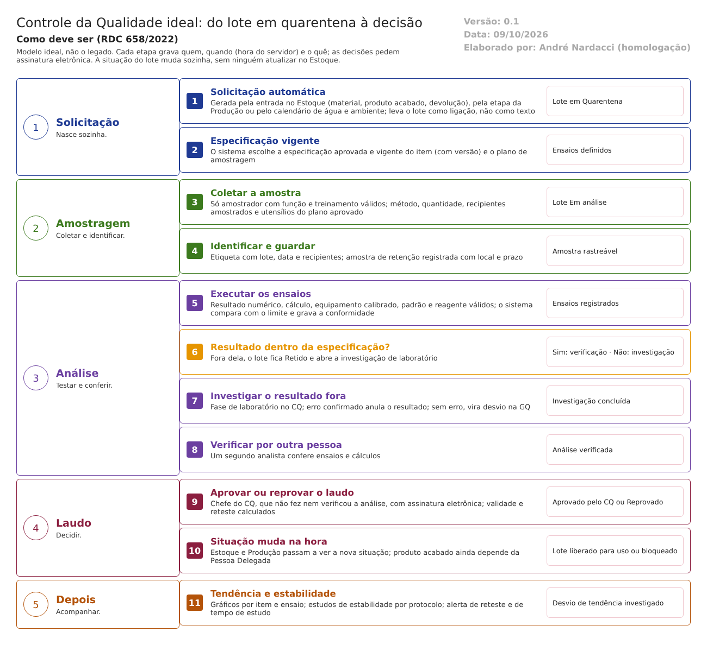

O ideal. Como o Controle da Qualidade deve trabalhar para atender à RDC 658/2022 e ao Guia 33/2020. Este documento não descreve o legado. Usa o que foi levantado no código só para mostrar o que manter, o que corrigir e o que construir. Complementa modelo-ideal/01-qualidade-entre-modulos.md (a situação única do lote e as 11 travas). Versão 0.1, de 09/10/2026, para validação com o CQ e a Garantia da Qualidade.
1. O papel do CQ no ERP
O CQ decide se cada lote pode ser usado: matérias-primas, materiais de embalagem, produtos intermediários, granel e acabados, e também a água e os ambientes da fábrica (RDC 658/2022, art. 14).
No modelo ideal, essa decisão não é um registro paralelo. Ela muda a situação do lote, que o Estoque e a Produção respeitam sem que ninguém precise atualizar nada (travas 1, 2 e 9 do documento 01).
| O CQ faz | O CQ não faz |
|---|---|
| Define o que analisar e com quais limites (especificações e métodos aprovados) | Liberar o produto acabado para venda (é da Pessoa Delegada, trava 4) |
| Coleta, analisa, verifica e emite o laudo | Encerrar um desvio (é da GQ) |
| Aprova ou reprova o lote, com assinatura | Movimentar o lote no Estoque |
| Investiga o resultado fora de especificação no laboratório | Alterar a especificação sem uma mudança aprovada pela GQ (trava 8) |
| Acompanha a estabilidade, a tendência, a água e os ambientes |
2. Como o trabalho anda

A análise passa por estas situações, nesta ordem. Ela não pula etapas e não volta sem registro:
| Situação da análise | Quem leva a ela | Situação do lote |
|---|---|---|
| Solicitada | Sistema (Estoque, Produção ou calendário) | Quarentena |
| Amostrada | Amostrador | Em análise |
| Em análise | Analista | Em análise |
| Em investigação | Sistema, ao gravar resultado fora da especificação | Retido |
| Em verificação | Analista, ao concluir os ensaios | Em análise |
| Aguardando laudo | Verificador, ao conferir | Em análise |
| Aprovada / Reprovada | Chefe do CQ, com assinatura | Aprovado pelo CQ / Reprovado |
| Cancelada | Chefe do CQ, com motivo; nunca depois do laudo emitido | Volta para Quarentena |
3. As funções do CQ ideal
Ação: Manter = o legado já faz como deve; Corrigir = existe, mas não atende; Construir = não existe.
| # | Função | Referência | Ação | Como deve funcionar | No legado hoje |
|---|---|---|---|---|---|
| 1 | Especificações e métodos com versão | Arts. 253 e 255 | Corrigir | A especificação de cada item tem versão, aprovação e data de vigência. O método aprovado e validado é escolhido numa lista ligada ao Controle de Documentos, não digitado. A alteração só entra por mudança aprovada (trava 8). A análise guarda a versão usada | Regra de Análise sem versão nem aprovação; método em texto livre; especificação cortada em 250 caracteres |
| 2 | Plano de amostragem aprovado | Art. 247 | Corrigir | O plano tem método, equipamento, quantidade, número de recipientes, tipo de recipiente, cuidados e condições de guarda. Plano em uso não pode ser excluído; a alteração gera nova versão | Regra Amostragem sem método nem plano; tolerância sempre em %; valores inválidos viram zero; excluída mesmo em uso |
| 3 | Solicitação automática, ligada ao lote | Art. 14, I | Corrigir | Nasce da entrada no Estoque, da etapa da Produção ou do calendário de água e ambiente. Guarda a ligação com o lote, o item e o fornecedor, não uma cópia em texto. Não pode ser cancelada depois do laudo | Lote e item copiados como texto; cancelamento possível com laudo liberado |
| 4 | Amostragem por pessoal autorizado | Art. 14, II | Corrigir | Só quem tem a função de amostrador e o treinamento válido no procedimento registra a coleta (trava 6). Data e hora vêm do servidor. Amostrador e verificador diferentes, conferidos ao gravar | Datas e amostrador vêm da tela; conferências só na tela |
| 5 | Identificação das amostras | Art. 251 | Corrigir | Etiqueta com lote, data da coleta e recipientes de onde a amostra saiu; não é impressa sem a coleta registrada | Gerar Etiqueta imprime sem laudo, como "não aprovado" |
| 6 | Registro completo de cada ensaio | Art. 258 | Corrigir | Resultado numérico quando o ensaio é numérico, cálculo, unidade, equipamento, padrão e reagente usados, data e hora do servidor e quem fez. O sistema compara com o limite e grava a conformidade | Resultado em texto; conformidade calculada só na tela; sem equipamento; data da tela |
| 7 | Verificação por outra pessoa | Art. 257; art. 258, VII | Construir | Um segundo analista confere ensaios e cálculos antes do laudo; quem fez não verifica | Não existe |
| 8 | Investigação de resultado fora de especificação | Art. 245; art. 287 | Construir | O resultado fora retém o lote e abre a investigação na hora. Fase de laboratório no CQ (erro de análise confirmado anula o resultado, com justificativa). Sem erro, vira desvio na GQ (trava 10). Reteste só depois da investigação | Só pede uma observação |
| 9 | Laudo com decisão e assinatura | Art. 258, VIII; art. 189 | Corrigir | O chefe do CQ aprova ou reprova, com assinatura eletrônica. O sistema confere a função e os resultados ao gravar. Quem fez ou verificou não aprova. Grava quem aprovou e quando. A situação do lote muda no mesmo instante (trava 2) | Aprovação sem conferir função nem resultados ao gravar; sem senha; não grava quem aprovou; não avisa o Estoque |
| 10 | Validade do laudo e reteste | Art. 189 | Corrigir | O sistema calcula a data de reteste e avisa antes. No dia, o lote passa a "reanálise vencida" e é bloqueado, sem depender de alguém | Data registrada, mas a trava de reanálise vencida está desligada no Estoque |
| 11 | Amostras de referência e de retenção | Art. 14, VIII; art. 236, II | Construir | Cada amostra guardada tem local, quantidade, prazo de guarda e registro de retirada. O sistema avisa o fim do prazo | Só a quantidade, na coleta |
| 12 | Reagentes, padrões e meios de cultura | Art. 260; art. 263 | Construir | Cadastro com lote, validade, preparo e controle. Material vencido não pode ser usado num ensaio | Não existe |
| 13 | Equipamentos do laboratório | Art. 243, III; art. 258, IX | Construir | Equipamentos com calibração e qualificação em dia. O ensaio só aceita equipamento dentro da validade da calibração | Não existe no CQ |
| 14 | Programa de estabilidade de acompanhamento | Arts. 271, 275 e 277 | Corrigir | Protocolo por produto, com lotes, ensaios, critérios de aceitação, tempos e condições de guarda até o fim da validade. Reserva de amostras. Calendário com aviso antes de cada tempo. Câmaras qualificadas | Regra Estabilidade não é protocolo; tempos sem data nem alerta |
| 15 | Monitoramento de água e ambiente | Art. 243, VI; art. 8º, VIII | Corrigir | Programa com pontos, frequência e limites de alerta e de ação. Resultado acima do limite de ação bloqueia o ponto ou a sala na Produção (trava 9). Coleta atrasada avisa | Sem frequência de coleta; a Produção decide pelos próprios registros |
| 16 | Avaliação de tendência | Arts. 245 e 256; art. 288 | Construir | Gráficos por item, ensaio e fornecedor. Tendência fora do padrão é investigada; a que afeta lote no mercado é comunicada à autoridade, pela GQ | Impossível: resultado em texto |
4. Integrações com os outros módulos
Todas as integrações seguem o requisito 16 do documento 01: quando falham, avisam e não deixam a operação pela metade.
| Com | O CQ recebe | O CQ envia | Quando | Trava |
|---|---|---|---|---|
| Estoque | Entrada de lote em quarentena (material, produto acabado, devolução), com a ligação ao lote, ao fornecedor e ao fabricante | Nova situação do lote (em análise, aprovado, reprovado, retido, reteste vencido); pedido de separação da amostra | Na entrada; a cada decisão | 1, 2 |
| Produção | Pedido de análise em processo, de granel e de semielaborado, por etapa | Resultado da etapa (libera ou retém a etapa seguinte); bloqueio de ponto de água ou de sala | Na etapa; a cada laudo | 9 |
| Garantia da Qualidade | Fornecedor qualificado; mudança aprovada (nova especificação); treinamento válido dos analistas e amostradores | Resultado fora de especificação confirmado (abre desvio); tendência atípica; dados para a revisão periódica do produto | Na investigação; periodicamente | 5, 6, 8, 10 |
| Controle de Documentos | Procedimentos e métodos vigentes, com versão | — | Ao escolher o método | 8 |
| Principal | Usuários, funções e assinatura eletrônica | — | Em cada gravação | — |
5. Quem faz o quê no CQ
| Função | Pode | Não pode |
|---|---|---|
| Amostrador | Registrar a coleta e a identificação das amostras | Analisar a amostra que coletou sem que outra pessoa verifique (a validar) |
| Analista (físico-químico, microbiológico) | Registrar ensaios; fazer a fase de laboratório da investigação | Verificar os próprios ensaios; aprovar o laudo |
| Verificador | Conferir ensaios e cálculos de outra pessoa | Verificar o que ele mesmo fez |
| Chefe do CQ | Aprovar ou reprovar o laudo; concluir a investigação de laboratório; aprovar especificações e planos (com mudança aprovada) | Aprovar a análise que fez ou verificou; liberar para venda |
| Responsável pela estabilidade | Abrir e acompanhar estudos; registrar a interrupção com motivo | Encerrar estudo com resultado fora sem investigação |
A função é conferida no servidor, em toda gravação, e não só na tela (documento 01, requisito 15). Toda decisão pede assinatura eletrônica (requisito 14).
6. O que manter do legado
O que o código mostra que já funciona como deve e vale a pena levar para a nova versão (a confirmar nos testes):
- O agrupamento das solicitações abertas juntas, com o número devolvido a quem pediu.
- A priorização das solicitações.
- Amostrador e verificador diferentes na coleta. Hoje a regra é conferida só na tela; precisa ser conferida também ao gravar.
- Quem digitou ensaios não aprova o laudo. Ampliar para quem verificou.
- A cópia da regra no ensaio, que preserva o que valia na hora da análise. Na nova versão, junto com a versão da especificação.
- As visões por usuário (cada amostrador e cada analista vê o que é seu) e a visão do administrador.
- O histórico de alterações (FluentLog) onde ele já existe. Estender a todas as gravações, com o motivo.
7. Pontos para validar com o CQ e a GQ
- Se o amostrador pode analisar a amostra que coletou.
- Se a verificação por outra pessoa vale para todos os ensaios ou só para os críticos (art. 258, VII, diz "quando apropriado").
- Os limites de alerta e de ação de cada ponto de água e de cada sala, e a frequência de coleta.
- O prazo de guarda das amostras de retenção por tipo de material.
- Se o controle de equipamentos do laboratório fica no CQ ou num cadastro comum com a Produção e a manutenção.
O que a ANVISA pede: textos citados
Texto literal das normas citadas em cada tema, extraído dos arquivos da pasta Documentação/ (RDC nº 658/2022 em português e Guia nº 33/2020) por homologacao/ferramentas/citar_normas_diagnostico.py. "(...)" marca trechos omitidos. No portal, clique na referência de cada tema para ver o texto.
Tema 1 · Especificações e métodos com versão
RDC 658/2022, art. 253
Art. 253. Os métodos analíticos devem ser validados.
RDC 658/2022, art. 255
Art. 255. Todos os testes descritos no registro ou na especificação devem ser realizados de acordo com os métodos aprovados.
Parágrafo único. Os resultados obtidos dos testes devem ser registrados.
Tema 2 · Plano de amostragem aprovado
RDC 658/2022, art. 247
Art. 247. A amostragem deve ser realizada e registrada de acordo com procedimentos escritos e aprovados, contendo:
I - o método de amostragem;
II - o equipamento a ser utilizado;
III - a quantidade da amostra a ser colhida;
IV - instruções para qualquer subdivisão necessária da amostra;
V - o tipo e a condição do recipiente de amostra a ser usado;
VI - a identificação dos recipientes amostrados;
VII - quaisquer precauções especiais a serem observadas, especialmente no que diz respeito à amostragem de materiais estéreis ou nocivos;
VIII - as condições de armazenamento; e
IX - instruções para a limpeza e o armazenamento de equipamentos de amostragem.
Tema 3 · Solicitação automática, ligada ao lote
RDC 658/2022, art. 14
Art. 14. Os requerimentos básicos do Controle de Qualidade são:
I - instalações adequadas, pessoal treinado e procedimentos aprovados devem estar disponíveis para amostragem e teste de matérias-primas, materiais de embalagem, produtos intermediários, a granel e terminados e, onde apropriado, para monitoramento das condições ambientais para fins de BPF;
(...)
Tema 4 · Amostragem por pessoal autorizado
RDC 658/2022, art. 14
Art. 14. Os requerimentos básicos do Controle de Qualidade são:
(...)
II - amostras de matérias-primas, materiais de embalagem, produtos intermediários, produtos a granel e produtos acabados devem ser coletadas por pessoal autorizado e por meio de métodos aprovados;
(...)
Tema 5 · Identificação das amostras
RDC 658/2022, art. 251
Art. 251. Os recipientes das amostras devem ser rotulados indicando o conteúdo, com o número do lote, a data de amostragem e os recipientes dos quais as amostras foram retiradas.
Tema 6 · Registro completo de cada ensaio
RDC 658/2022, art. 258
Art. 258. Os testes realizados devem ser registrados, e os registros devem conter, minimamente, os seguintes dados:
I - nome do material ou produto e, quando aplicável, forma farmacêutica;
II - número do lote e, se for caso, fabricante e/ou fornecedor;
III - referências às especificações relevantes e procedimentos de teste;
IV - resultados de testes, incluindo observações e cálculos, e referência a quaisquer certificados de análise;
V - datas dos testes;
VI - iniciais ou rubricas das pessoas que realizaram o teste;
VII - iniciais das pessoas que verificaram os testes e os cálculos, quando apropriado;
VIII - declaração clara de aprovação ou reprovação (ou outra decisão de status) e a assinatura datada da pessoa responsável designada; e
IX - referência aos equipamentos utilizados.
Tema 7 · Verificação por outra pessoa
RDC 658/2022, art. 257
Art. 257. Quaisquer cálculos devem ser examinados criticamente.
RDC 658/2022, art. 258
Art. 258. Os testes realizados devem ser registrados, e os registros devem conter, minimamente, os seguintes dados:
(...)
VII - iniciais das pessoas que verificaram os testes e os cálculos, quando apropriado;
(...)
Tema 8 · Investigação de resultado fora de especificação
RDC 658/2022, art. 245
Art. 245. Alguns tipos de dados, tais como resultados de testes, rendimentos, controles ambientais, devem ser registrados de maneira a permitir a avaliação de tendência.
Parágrafo único. Quaisquer dados fora da tendência ou da especificação devem ser abordados e sujeitos a investigação.
RDC 658/2022, art. 287
Art. 287. Devem ser investigadas as tendências atípicas significativas ou os resultados fora de especificação.
Tema 9 · Laudo com decisão e assinatura
RDC 658/2022, art. 258
Art. 258. Os testes realizados devem ser registrados, e os registros devem conter, minimamente, os seguintes dados:
(...)
VIII - declaração clara de aprovação ou reprovação (ou outra decisão de status) e a assinatura datada da pessoa responsável designada; e
(...)
RDC 658/2022, art. 189
Art. 189. Somente matérias-primas que tiverem sido liberadas pelo departamento de Controle de Qualidade e que estiverem dentro de sua data de reteste devem ser utilizadas.
Tema 10 · Validade do laudo e reteste
RDC 658/2022, art. 189
Art. 189. Somente matérias-primas que tiverem sido liberadas pelo departamento de Controle de Qualidade e que estiverem dentro de sua data de reteste devem ser utilizadas.
Tema 11 · Amostras de referência e de retenção
RDC 658/2022, art. 14
Art. 14. Os requerimentos básicos do Controle de Qualidade são:
(...)
VIII - amostras de referência suficientes de matérias-primas e produtos devem ser mantidas de acordo com a instrução normativa específica para permitir a futura análise do produto, se necessário.
RDC 658/2022, art. 236
Art. 236. O Departamento de Controle de Qualidade tem as seguintes responsabilidades:
(...)
II - supervisionar o controle da referência e/ou retenção de amostras de materiais e produtos quando aplicável;
(...)
Tema 12 · Reagentes, padrões e meios de cultura
RDC 658/2022, art. 260
Art. 260. A qualidade dos reagentes de laboratório, soluções, vidrarias, padrões de referência e meios de cultura deve ser especificada.
§ 1º Os materiais de que trata o caput deste artigo devem ser preparados e controlados de acordo com procedimentos escritos.
§ 2º As verificações e testes realizados nos materiais de que trata o caput deste artigo devem ser proporcionais ao seu uso e aos dados de estabilidade disponíveis.
RDC 658/2022, art. 263
Art. 263. Os reagentes de laboratório, as soluções, as substâncias químicas de referência e os meios de cultura devem ser identificados com a data de preparação e abertura e a assinatura da pessoa que os preparou.
§ 1º A data de validade dos reagentes e meios de cultura deve ser indicada no rótulo, juntamente com as condições de armazenamento específicas.
§ 2º Para soluções volumétricas, a última data de padronização e o último fator de correção devem ser indicados.
Tema 13 · Equipamentos do laboratório
RDC 658/2022, art. 243
Art. 243. Os seguintes documentos devem estar prontamente disponíveis para o Departamento de Controle de Qualidade:
(...)
III - procedimentos e registros de calibração/qualificação de instrumentos e manutenção de equipamentos;
(...)
RDC 658/2022, art. 258
Art. 258. Os testes realizados devem ser registrados, e os registros devem conter, minimamente, os seguintes dados:
(...)
IX - referência aos equipamentos utilizados.
Tema 14 · Programa de estabilidade de acompanhamento
RDC 658/2022, art. 271
Art. 271. Após a comercialização, a estabilidade do medicamento deve ser monitorada de acordo com um programa contínuo e adequado que permita a detecção de qualquer questão de estabilidade associada à formulação.
RDC 658/2022, art. 275
Art. 275. O programa de estabilidade de acompanhamento deve ser descrito em um protocolo.
RDC 658/2022, art. 277
Art. 277. O protocolo para um programa de estabilidade de acompanhamento deve se estender até o final do período de validade, devendo incluir, mas não se limitando, aos seguintes parâmetros:
I - número de lote(s) por concentração e tamanhos de lotes diferentes, se aplicável;
II - métodos de ensaio físico, químico, microbiológico e biológico pertinentes;
III - critérios de aceitação;
IV - referência a métodos de análise;
V - descrição do(s) sistema(s) de fechamento de embalagem;
VI - intervalos de teste (pontos de análise);
VII - descrição das condições de armazenamento, sendo que devem ser utilizadas as condições padronizadas no regulamento específico vigente; e
VIII - outros parâmetros aplicáveis específicos do medicamento.
Tema 15 · Monitoramento de água e ambiente
RDC 658/2022, art. 243
Art. 243. Os seguintes documentos devem estar prontamente disponíveis para o Departamento de Controle de Qualidade:
(...)
VI - dados de monitoramento ambiental (ar, água e outras utilidades), quando necessário; e
(...)
RDC 658/2022, art. 8º
Art. 8º Um Sistema da Qualidade Farmacêutica adequado à fabricação de medicamentos deve garantir que:
(...)
VIII - um estado de controle seja estabelecido e mantido por meio do desenvolvimento e uso de sistemas eficazes de monitoramento e controle para o desempenho do processo e para a qualidade do produto;
(...)
Tema 16 · Avaliação de tendência
RDC 658/2022, art. 245
Art. 245. Alguns tipos de dados, tais como resultados de testes, rendimentos, controles ambientais, devem ser registrados de maneira a permitir a avaliação de tendência.
Parágrafo único. Quaisquer dados fora da tendência ou da especificação devem ser abordados e sujeitos a investigação.
RDC 658/2022, art. 256
Art. 256. Os resultados dos parâmetros identificados como atributos críticos de qualidade devem ser analisados quanto a tendências e verificados, visando garantir que sejam consistentes entre si.
RDC 658/2022, art. 288
Art. 288. Qualquer resultado confirmado fora de especificação, ou com tendência negativa significativa, que afete os lotes de produtos liberados para o mercado, deve ser comunicado às autoridades competentes.